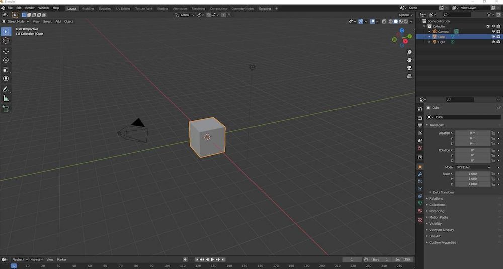

Blender is a powerful software used by professional designers for editing and creating 3D models. It is primarily focused on 3D design rather than graphics, enabling users to prepare sketches and develop intricate 3D designs that are utilized on a large scale. Many big companies use Blender to model vehicles and create 3D characters for games. In addition to 3D modeling, video editors also leverage Blender to complete their 3D video projects.
Blender has gained significant popularity in the freelancing world, as videos are often tailored to meet client demands. Users can create credit models, roads, bridges, and vehicle models. One of the advantages of Blender is its accessibility; there are numerous tutorials available on YouTube, making it easier for beginners to learn without the need for paid courses. Many YouTubers explain Blender in a straightforward manner, allowing even newbies to grasp its functionalities effectively. Although Blender may seem challenging at first, it becomes easier with practice due to its extensive options and features that facilitate the creation of impressive models.
Many courses are available, both paid and free (including those on YouTube).
Visit Blender Official Website
Founder: Ton Roosendaal
Launch Date: January 2, 1994
Version: 4.2 LTS, Released on July 16, 2024
Blender is a versatile open-source 3D design software that caters to everyone from hobbyists to professionals. Whether you’re creating stunning animation videos, realistic renders, or game-ready models, Blender has the tools you need—all for free. If you’re new to Blender or looking to improve your skills, this guide will take you through three essential stages: getting started, making the most of its features, and becoming a professional editor.
Diving into Blender for the first time can feel overwhelming, but with a step-by-step approach, you’ll soon get the hang of it.
Start by downloading Blender from the app store or play store. It’s free and works on all major platforms. Once installed, launch it and take a moment to explore its clean yet comprehensive interface.
Blender’s interface is divided into several sections:
Spend some time exploring these panels and menus. Familiarity is key!
Start with small steps:
Create something straightforward, like a table or a vase. Use basic modeling tools and apply simple colors or textures. Then, render your creation with Blender’s built-in Eevee or Cycles engines.
There’s a wealth of beginner-friendly tutorials available online. Start with Blender’s official learning platform or channels like Blender Guru. Hands-on practice is the fastest way to learn.
Blender’s versatility makes it a powerful tool for countless applications, from animation to product design. Let’s explore some ways to unlock its full potential.
Once you’re comfortable with Blender’s tools, it’s time to focus on honing your skills and building a professional-level portfolio to earn money.
Focus on an area that excites you and aligns with your career goals:
Your portfolio is your best marketing tool. Include diverse projects showcasing your skills and present them on platforms like Behance, ArtStation, or your personal website. Highlight pieces that demonstrate versatility and creativity.
Join online Blender communities or local meetups to connect with fellow artists. Collaboration often leads to learning new techniques and even landing freelance opportunities.
Blender is constantly evolving, with frequent updates introducing new tools and features. Stay ahead by exploring these updates and incorporating them into your workflow.
Teaching others through tutorials or blog posts not only reinforces your own understanding but also builds your reputation as an expert in the field.